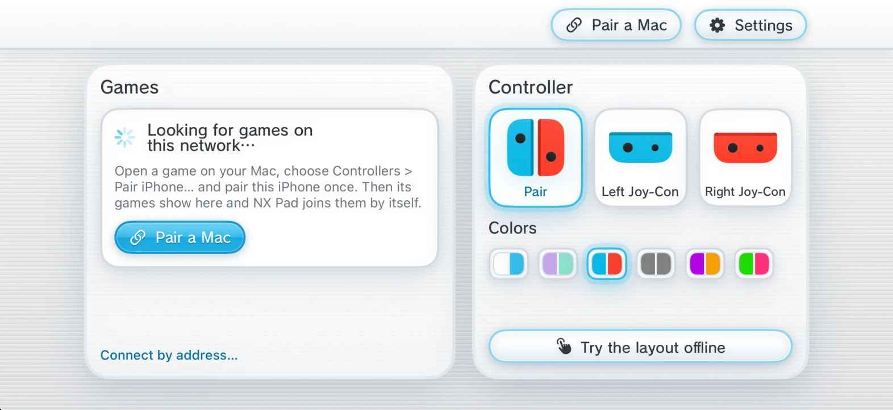

NX Packer 0.1.0
For Mac · Apple silicon · macOS 26.6 or later
You need both: the app builds games with the matching source.
Build a game with NX Packer. Use NX Pad as your Joy-Cons over Wi-Fi.
For Mac · Apple silicon · macOS 26.6 or later
You need both: the app builds games with the matching source.
For iPhone · iOS 26 or later
Build it on your Mac and install it on your iPhone from Xcode.
Build a game on your Mac

Run these in Terminal from the unzipped source folder.
sudo xcode-select -s /Applications/Xcode.app
xcodebuild -downloadComponent MetalToolchain
brew install xcodegen zstd glslang
python3 -m venv venv
venv/bin/python3 -m pip install lz4 "capstone>=5,<6" fonttools nsz zbic "backports.zstd; python_version < '3.14'"For IPA builds, also install the iOS platform in Xcode Settings.
venv/bin/python3. Add your game folder and prod.keys if it is encrypted. Switch 2 .nup files need no keys.
Use your iPhone as a controller

Run these in Terminal from the unzipped NX Pad source.
brew install xcodegen
cd dm/joypad
xcodegen generateIn Support/Signing.local.xcconfig, set your Xcode team ID and a unique bundle identifier.
DEVELOPMENT_TEAM = ABCDE12345
PRODUCT_BUNDLE_IDENTIFIER = com.yourname.nxpadConnect your iPhone, enable Developer Mode if prompted, and run NXPad.xcodeproj on the device. Allow Local Network access when NX Pad asks.
NX Packer is signed ad hoc, without Apple notarization. Follow Apple’s guidance for opening downloaded apps.
Choose a game and its keys if needed. Open Build Tools to check the source folder and Python executable.
Check Wi-Fi and Local Network access. Open the game’s pairing window. Older Mac builds need to be rebuilt with NX Pad support.